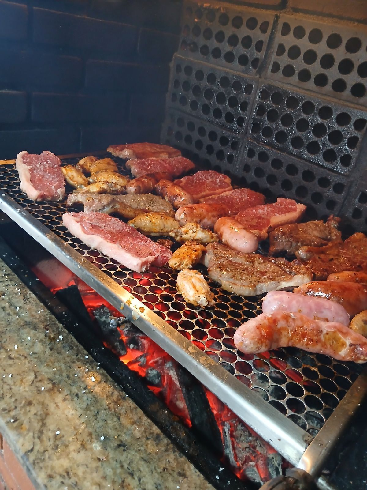

Como fazer o melhor Churrasco

Descrição
O churrasco brasileiro é uma verdadeira celebração de sabores e aromas.
Carnes suculentas assadas lentamente na brasa, com o sal grosso realçando
cada corte.
O cheiro da fumaça invade o ambiente e abre o apetite antes mesmo da
primeira mordida.
Cada pedaço traz maciez, sabor intenso e aquele toque defumado
inconfundível.
Perfeito para reunir pessoas, criar memórias e comer muito bem.
Ingredientes
- Picanha 1.5kg
- Linguiça Toscana 1.0kg
- Asa de frango 2.0kg
- Coração de galinha 1.5kg
- Sal grosso 1pct
Passo a Passo
-
Prepare as carnes: Retire a picanha da geladeira, corte em peças grossas
e tempere apenas com sal grosso; a linguiça, asas e corações podem ficar
naturais ou levemente salgados.
-
Acenda a churrasqueira: Prepare a brasa até ficar bem quente, sem chamas
altas, mantendo um calor médio e constante.
-
Comece pelos frangos: Coloque primeiro as asas de frango e os corações
de galinha, pois demoram mais para assar e precisam de fogo médio.
-
Asse a linguiça: Depois que o frango estiver quase pronto, coloque a
linguiça toscana, virando aos poucos para dourar por igual.
-
Finalize com a picanha: Leve a picanha à grelha com a gordura para cima,
vire poucas vezes e asse até o ponto desejado.
-
Sirva: Retire as carnes, deixe descansar por alguns minutos, fatie a
picanha e sirva tudo ainda quente.
Página inicial